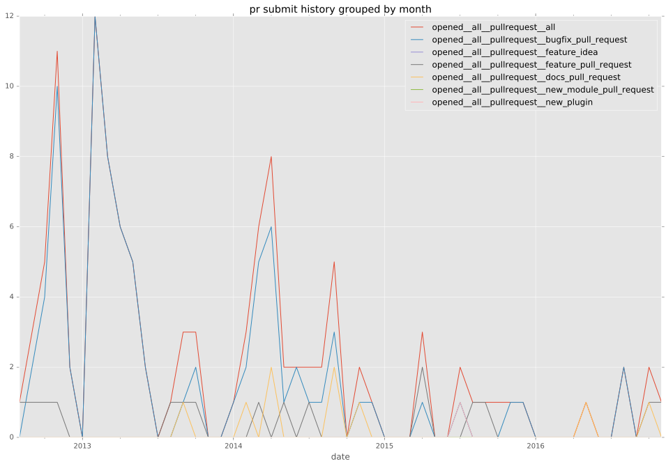
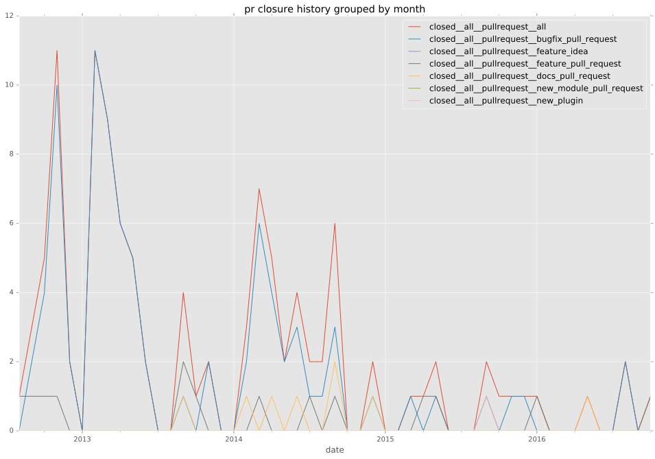
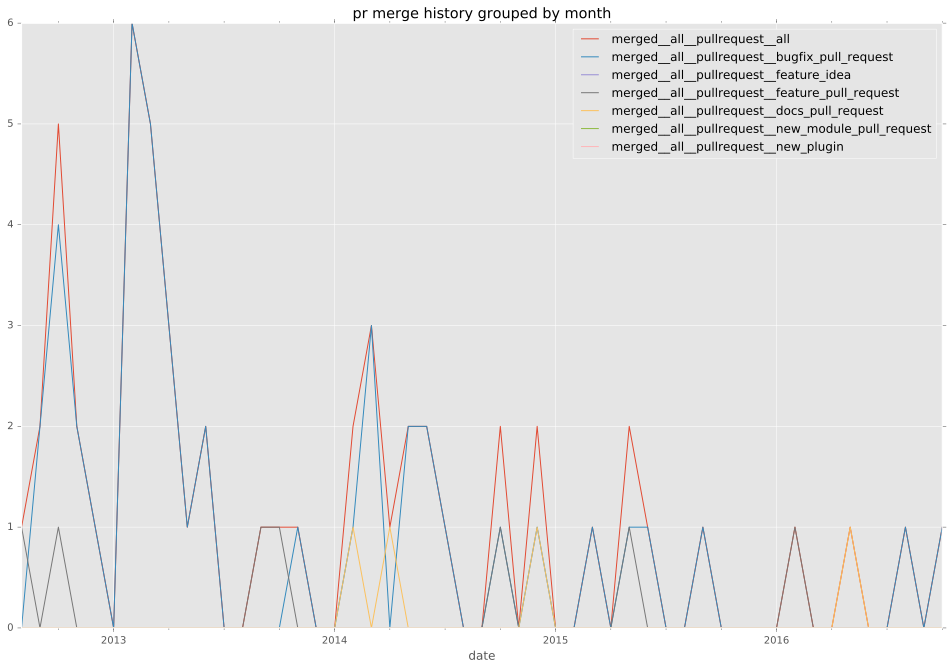

authors
- dhozac
- ahtik
maintainers
- ansible
contributors
- abadger : 53 commits
- dhozac : 34 commits
- Tinche : 28 commits
- mpdehaan : 21 commits
- towolf : 14 commits
- kolbyjack : 12 commits
- leucos : 11 commits
- jpmens : 10 commits
- dagwieers : 10 commits
- dorfsmay : 9 commits
- joshkehn : 6 commits
- jimi-c : 6 commits
- bcoca : 6 commits
- mxxcon : 5 commits
- pieska : 4 commits
- p-tr0 : 4 commits
- marcosdiez : 3 commits
- ahtik : 3 commits
- zemanel : 2 commits
- mavimo : 2 commits
- kavink : 2 commits
- volker48 : 1 commits
- offby1 : 1 commits
- major : 1 commits
- jkleint : 1 commits
- jirutka : 1 commits
- jctanner : 1 commits
- jbradberry : 1 commits
- gimoh : 1 commits
- erimar77 : 1 commits
total issue counts
unknown: 2
feature pull request: 15
docs report: 2
pullrequest: 113
docs pull request: 10
bugfix pull request: 86
feature idea: 10
issue: 93
bug report: 81
issue history
pullrequest history



days open by issue type
bugfix pull request
count: 130
std: 21.0278289072
min: 0
max: 126
median: 0.5
mean: 7.56923076923
all
count: 238
std: 50.9104109482
min: 0
max: 539
median: 1.0
mean: 16.9411764706
pullrequest
count: 0
std: nan
min: nan
max: nan
median: nan
mean: nan
docs pull request
count: 12
std: 13.789543689
min: 1
max: 50
median: 6.0
mean: 9.83333333333
docs report
count: 1
std: nan
min: 29
max: 29
median: 29.0
mean: 29.0
feature pull request
count: 21
std: 42.7783879569
min: 0
max: 147
median: 5.0
mean: 20.7619047619
feature idea
count: 4
std: 29.9485670219
min: 14
max: 84
median: 64.5
mean: 56.75
issue
count: 0
std: nan
min: nan
max: nan
median: nan
mean: nan
bug report
count: 68
std: 84.5636270728
min: 0
max: 539
median: 1.5
mean: 32.9117647059
closures grouped by total days open